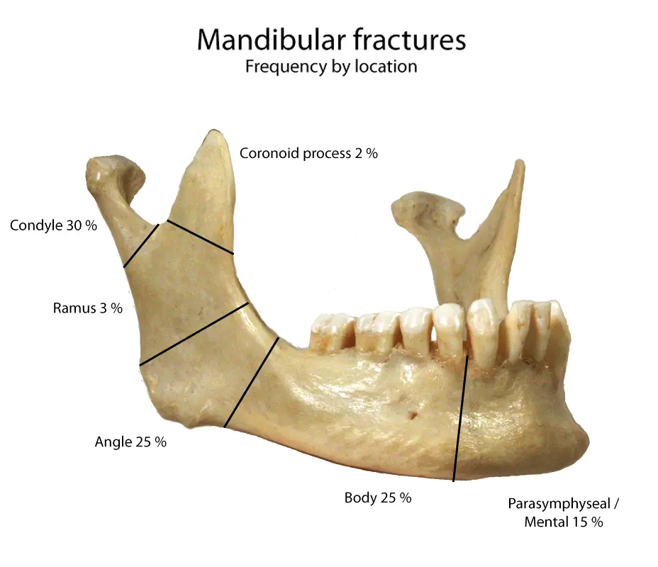

DX.6 — Fracture mandibulaire
Après un traumatisme facial, la malocclusion et la douleur mandibulaire évoquent la fracture, que l'orthopantomogramme (OPG) ou le scanner confirmentS1S8. La voie aérienne passe avant tout, et toute fracture ouverte reçoit un antibiotique court dès les urgencesS8S9.
1. Définition
La fracture mandibulaire est une solution de continuité de la mandibule, os mobile en U qui porte les dents inférieures et s'articule aux os temporauxS8. Le trait siège sur la symphyse, la parasymphyse, le corps, l'angle, la branche montante, le processus coronoïde ou le processus condylaireS1. Elle devient ouverte dès que le foyer communique avec la bouche, à travers la muqueuse ou l'alvéole d'une dent, ou avec la peauS1S9.
2. Épidémiologie (Suisse, puis Europe)
La mandibule figure parmi les os de la face qui se fracturent le plus souvent, en Suisse comme dans les séries européennesS4S6. Les chiffres utiles situent sa fréquence, et le terrain indique quel patient la présente selon l'âge et le mécanisme.
Chiffres utiles : Suisse, puis Europe
| Niveau | Donnée | Ce qu’elle implique | Source |
|---|---|---|---|
| Suisse (Zurich) | Environ un tiers des lésions faciales comporte une fracture mandibulaire. | La mandibule compte parmi les fractures maxillo-faciales les plus fréquentes. | S4 |
| Suisse (Zurich) | 15 patients, 30 fractures dans une série prospective ; 12 hommes sur 15 ; âge médian 23,6 ans. | Le fracturé typique est un homme jeune, souvent porteur de plusieurs traits. | S4 |
| Europe (EURMAT, European Maxillofacial Trauma) | 3396 patients et 4155 fractures en un an ; 1743 fractures mandibulaires, premier site facial. | La mandibule représente environ 42 % des fractures faciales européennes (calcul de ce cours). | S6 |
| Europe (EURMAT) | Le condyle forme le site mandibulaire le plus fréquent. | Une douleur prétragienne après un choc sur le menton impose de chercher le condyle. | S6 |
| Europe (EURMAT, enfants) | 114 enfants de 15 ans ou moins sur 3396 patients, soit 3,3 % ; 47 fractures mandibulaires, dont 18 condyliennes et 12 du corps. | Chez l’enfant aussi, la mandibule et surtout le condyle dominent. | S7 |
| Royaume-Uni (urgences) | 45 % des fractures faciales dans une grande série ; deuxième fracture faciale après le nez. | Le médecin d’urgence la rencontre souvent. | S8 |
| Allemagne (Munich) | Les accidents de la route ne causent plus que 10 à 12 % des cas. | L’agression et la chute dominent désormais. | S13S6 |
L'étude EURMAT note que les agressions et les chutes dépassent désormais les accidents de la route parmi les causes de traumatisme facial en EuropeS6. Le cours n'a pas trouvé d'incidence nationale suisse publiée ; il retient donc les séries zurichoises et européennes ci-dessusS4S6.
Terrain et mécanismes selon l’âge
| Terrain | Mécanisme dominant | Site typique | Point d’attention | Source |
|---|---|---|---|---|
| Homme jeune | Agression, souvent un coup latéral | Angle, corps, parasymphyse | Un second trait controlatéral peut accompagner le premier. | S1S8 |
| Enfant | Chute ; sport après 10 ans | Condyle | Le protège-dents réduit le risque sportif. | S7 |
| Patient de plus de 60 ans | Chute de sa hauteur | Condyle | La fracture passe inaperçue au premier examen dans 20,0 % des cas. | S12 |
| Mandibule édentée atrophique | Traumatisme minime, voire mastication | Corps, souvent des deux côtés | La faible hauteur osseuse fragilise l’os. | S1 |
| Patient sous anticoagulant | Tout mécanisme | Tout site | L’anticoagulation était plus fréquente chez les opérés compliqués (15,6 % contre 5,1 %). | S11 |
Dans la série berlinoise, le tabac était documenté chez 41,4 % des opérés, et l'agression causait 47,0 % des fracturesS11.
3. Physiopathologie
La mandibule forme un anneau osseux avec la base du crâne, si bien qu'un choc peut la rompre au point d'impact et à distanceS8. La base anatomique nomme les régions, la biomécanique explique les traits associés, et les conséquences du déplacement relient l'os à la clinique.
Base à connaître : les régions de la mandibule
Les deux hémimandibules fusionnent à la symphyse avant l'âge de deux ans, puis chaque branche montante se termine par le condyle et le processus coronoïdeS8. Le nerf alvéolaire inférieur parcourt le corps et sort par le foramen mentonnier sous le nom de nerf mentonnier, qui innerve la lèvre inférieure et le mentonS1S8.
Régions de la mandibule et fréquence des fractures. Cette photographie d'une mandibule sèche, annotée par Frank Gaillard, montre l'os découpé en régions et indique une fréquence de fracture pour chacuneS14.

Le lecteur repère d'abord seul le condyle, le processus coronoïde, la branche montante, l'angle, le corps et la région mentonnière, puis il ouvre la copie annotée.
La copie annotée porte des repères numérotés, que la lecture guidée explique un par un.
- 1. Le condyle porte, selon l'image, 30 % des fractures, et l'AO (Arbeitsgemeinschaft für Osteosynthesefragen, fondation de Davos) le désigne comme le site le plus fréquentS14S1.
- 2. Le processus coronoïde reste rarement fracturé, avec 2 % des cas selon l'imageS14.
- 3. La branche montante représente seulement 3 % des fractures dans cette répartition australienneS14.
- 4. L'angle compte 25 % des fractures ici, et une dent de sagesse incluse s'y trouve souvent dans le traitS14S1.
- 5. Le corps, qui atteint 25 % sur l'image, contient le canal du nerf alvéolaire inférieurS14S1.
- 6. La région parasymphysaire et mentonnière représente 15 % des fractures et abrite le foramen mentonnierS14S1.
Ce que l’image décide. La carte des régions oriente l'examen, car le site présumé décide de l'incidence radiologique et du mode d'ostéosynthèseS1.

Biomécanique : du choc au trait de fracture
| Mécanisme | Trait attendu | Conséquence pratique | Source |
|---|---|---|---|
| Choc sur la ligne médiane du menton | Fracture symphysaire et fracture bicondylienne | Chercher les deux condyles devant toute plaie sous-mentonnière. | S1 |
| Choc latéral | Fracture du corps ou de l’angle, et fracture du condyle controlatéral | Examiner le côté opposé au coup. | S1S8 |
| Coup sur l’angle | Angle, parfois corps ou symphyse controlatéraux | Suspecter deux traits. | S1 |
| Accident de la route ou arme à feu | Fracture comminutive | Demander un scanner pour planifier la réduction. | S1 |
| Chute sur le menton chez l’enfant | Fracture d’un ou des deux condyles | Chercher une otorragie et une béance antérieure. | S8S1 |
Le bord supérieur de la mandibule travaille en tension et le bord inférieur en compression pendant la fonction, ce qui guide la pose des plaquesS1. L'os résiste le mieux à la symphyse et le moins aux condyles, ce qui explique la fréquence des fractures condyliennesS1.
Conséquences du déplacement
| Situation anatomique | Mécanisme | Traduction clinique | Source |
|---|---|---|---|
| Fracture bilatérale du corps (segment libre) | La langue perd son appui antérieur et bascule en arrière. | Obstruction des voies aériennes chez le patient obnubilé. | S8 |
| Fracture du condyle | La branche se raccourcit du côté atteint. | Contact prématuré homolatéral, béance controlatérale, déviation vers la fracture à l’ouverture. | S1 |
| Fracture des deux condyles | Les deux branches se raccourcissent. | Béance antérieure. | S1 |
| Fragment condylien | Le muscle ptérygoïdien latéral le tire en dedans. | Déplacement médial fréquent sur le scanner. | S1 |
| Trait dans la zone dentée | Le ligament parodontal ouvre le foyer sur la bouche. | Fracture ouverte et contaminée. | S1 |
| Trait sur le canal mandibulaire | Le nerf alvéolaire inférieur subit étirement ou compression. | Hypoesthésie de la lèvre et du menton. | S1S13 |
4. Démarche diagnostique
La démarche commence par les voies aériennes et le traumatisme associé, puis elle cherche la fracture, son caractère ouvert et ses traits multiplesS8. Les étapes fixent chaque décision, les diagnostics différentiels écartent les imitateurs, et les terrains particuliers adaptent la vigilance.
Étapes de la démarche, de l’accueil à l’orientation
| Étape | Action | Seuil ou signe décisif | Conduite | Source |
|---|---|---|---|---|
| 1. Accueil | Appliquer les principes ATLS (Advanced Trauma Life Support). | Voie aérienne menacée, segment libre, patient obnubilé | Penchement en avant, position latérale, puis intubation précoce. | S8 |
| 2. Tête et rachis | Évaluer le traumatisme crânien à part entière. | Perte de connaissance constatée | Investiguer le crâne selon son propre protocole. | S8 |
| 3. Anamnèse | Préciser le mécanisme et le délai depuis le choc. | Présentation tardive | Risque infectieux accru : antibiotique sans délai si la fracture est ouverte. | S1 |
| 4. Examen | Regarder, palper, mobiliser ; tester l’occlusion et le nerf mentonnier. | Un des cinq critères de Manchester | Radiographie indiquée. | S8 |
| 5. Imagerie | Orthopantomogramme (OPG), complété par un cliché de face, ou scanner. | Trait visible, trait multiple ou comminution | Scanner pour la planification. | S1S8 |
| 6. Classement | Site, ouverture, déplacement, nombre de traits. | Fracture ouverte | Antibiotique large spectre dès les urgences. | S8S9 |
| 7. Orientation | Discuter tout cas avec le chirurgien maxillo-facial. | Toute fracture confirmée | Discussion systématique avec le chirurgien maxillo-facial. | S8 |
Diagnostics différentiels du lot
| Diagnostic | Ce qui le rapproche | Ce qui le distingue | Source |
|---|---|---|---|
| Luxation mandibulaire (DX.10) | Bouche déformée, malocclusion, douleur prétragienne | Bouche bloquée ouverte sans choc, souvent après un bâillement ; les luxations postérieures et latérales s’associent à une fracture. | S8 |
| Trouble temporo-mandibulaire douloureux (DX.3) | Douleur articulaire et limitation de l’ouverture | Absence de traumatisme récent (déduction de ce cours : la fracture suit toujours un choc). | S8 |
| Abcès dentoalvéolaire (DX.2) | Tuméfaction, trismus, douleur mandibulaire | Dent causale sans traumatisme (déduction de ce cours) ; en cas d’infection après fracture, la dent du trait devient la source à examiner. | S1 |
| Fracture dentoalvéolaire isolée | Dents mobiles et plaie gingivale | Des dents mobiles existent avec ou sans fracture osseuse ; l’imagerie tranche. | S1 |
| Fracture de l’arc zygomatique | Limitation de l’ouverture après un choc latéral | L’arc enfoncé bloque le mouvement du processus coronoïde. | S8 |
Terrains particuliers : sujet âgé, édenté, enfant
| Terrain | Piège | Mesure | Source |
|---|---|---|---|
| Patient âgé | Fracture manquée au premier examen dans 20,0 % des cas | Examen soigneux, surtout en cas de trouble mnésique ou de chute en établissement. | S12 |
| Mandibule édentée atrophique | Fracture après un choc minime, souvent bilatérale | OPG, cliché de face et scanner pour planifier. | S1 |
| Enfant | Chute sur le menton et fracture condylienne | Chercher une otorragie et une plaie sous-mentonnière. | S7S8 |
Chez le patient âgé, la démence et la chute survenue à l'hôpital ou en établissement médico-social augmentent significativement le risque de fracture manquéeS12.
5. Anamnèse ciblée et drapeaux rouges
L'anamnèse précise le mécanisme, car il prédit le site et la gravité, puis elle cherche les signes qui imposent une conduite immédiateS1. Les questions ciblées guident l'interrogatoire, et les drapeaux rouges fixent l'urgence.
Questions ciblées et interprétation
| Question | Réponse évocatrice | Interprétation | Source |
|---|---|---|---|
| Comment le choc est-il survenu ? | Coup de poing latéral | Fracture du corps ou de la branche, avec trait controlatéral possible. | S1S8 |
| Où le choc a-t-il porté ? | Sur la pointe du menton | Fracture symphysaire, condylienne ou les deux. | S1 |
| Les dents se rejoignent-elles comme avant ? | Non, l’articulé a changé | La malocclusion compte parmi les signes les plus sensibles. | S1 |
| La lèvre inférieure est-elle engourdie ? | Oui, d’un côté | Trait sur le trajet du nerf alvéolaire inférieur. | S1 |
| Avez-vous perdu connaissance ? | Oui | Traumatisme crânien associé, présent dans près d’une fracture sur cinq. | S8 |
| Depuis quand ? | Plusieurs jours | Retard qui augmente le risque d’infection du foyer. | S1 |
| Prenez-vous un anticoagulant ? | Oui | Anticoagulation plus fréquente chez les opérés compliqués à Berlin. | S11 |
| Avez-vous déjà eu la mâchoire bloquée ? | Luxations répétées | Orienter vers la luxation du DX.10. | S8 |
Drapeaux rouges et conduite immédiate
| Drapeau rouge | Signification | Conduite immédiate | Source |
|---|---|---|---|
| Patient obnubilé avec fracture bilatérale du corps | Segment libre qui fait basculer la langue | Penchement en avant ou position latérale ; traction du segment, canule oropharyngée, intubation dès que possible. | S8 |
| Perte de connaissance ou confusion | Traumatisme crânien associé | Évaluer et investiguer le traumatisme crânien séparément. | S8 |
| Saignement de l’oreille | Fracture de l’os tympanal, de la base du crâne ou du condyle | Envisager aussi une fracture de la base du crâne, une plaie du conduit ou une rupture du tympan. | S8 |
| Plaie gingivale en regard d’un trait | Fracture ouverte | Antibiotique à large spectre dès les urgences. | S8 |
| Dent avulsée introuvable chez un patient obnubilé | Inhalation possible | Radiographie du thorax. | S8 |
6. Examen physique ciblé, région par région
L'examen suit la règle « regarder, palper, mobiliser » et couvre toute la face, car 25 % des fracturés présentent une autre fracture facialeS8. Chaque région est examinée dans sa fenêtre : face et voies aériennes, oreille et articulation, cavité buccale et mandibule et nerf mentonnier.
Région 1 — face, cou et voies aériennes
| Geste | Signe recherché | Interprétation | Source |
|---|---|---|---|
| Inspecter la face | Tuméfaction, ecchymose, plaie | Le siège de la tuméfaction indique le siège de la fracture. | S1S8 |
| Regarder la position de la mandibule | Mandibule inclinée ou asymétrique | Fracture déplacée ou luxation unilatérale. | S8 |
| Observer la bouche au repos | Bouche ouverte, fermeture impossible | Luxation bilatérale plutôt que fracture. | S8 |
| Évaluer la voie aérienne | Patient obnubilé avec fracture bilatérale du corps | Risque de bascule de la langue sur le segment libre. | S8 |
| Examiner le reste de la face | Douleur, déformation, plaie | Fracture faciale associée. | S8 |
Région 2 — oreille et articulation temporo-mandibulaire
| Geste | Signe recherché | Interprétation | Source |
|---|---|---|---|
| Inspecter le conduit auditif | Sang dans le conduit | Fracture de l’os tympanal après chute sur le menton, ou fracture condylienne. | S8 |
| Palper l’articulation, éventuellement avec le petit doigt ganté dans le conduit | Douleur prétragienne | Fracture du processus condylaire ou hématome intra-articulaire. | S1S8 |
| Faire ouvrir la bouche | Déviation vers un côté | Fracture condylienne du côté de la déviation. | S1 |
Région 3 — cavité buccale et occlusion
| Geste | Signe recherché | Interprétation | Source |
|---|---|---|---|
| Faire serrer les dents | Malocclusion perçue par le patient ou vue | Signe parmi les plus sensibles de fracture. | S1 |
| Analyser le type de malocclusion | Contact prématuré d’un côté et béance de l’autre | Fracture condylienne du côté du contact prématuré. | S1 |
| Analyser le type de malocclusion | Béance antérieure | Fracture des deux condyles ou des deux angles. | S1 |
| Analyser le type de malocclusion | Occlusion croisée bilatérale | Fracture symphysaire associée aux deux condyles. | S1 |
| Inspecter le plancher buccal | Hématome sublingual | Signe d’une fracture mandibulaire. | S1S8 |
| Inspecter la gencive | Déchirure gingivale | Fracture ouverte presque toujours. | S1S8 |
| Tester les dents | Dent mobile, fracturée ou absente | Fracture dentaire ou alvéolaire, avec ou sans trait osseux. | S1 |
Région 4 — mandibule et nerf mentonnier
| Geste | Signe recherché | Interprétation | Source |
|---|---|---|---|
| Palper le bord basilaire et la face interne au doigt ganté | Marche d’escalier, douleur exquise | Fracture du corps ou de l’angle. | S8 |
| Mobiliser les segments dentés | Mobilité anormale entre deux dents | Fracture certaine, ouverte si elle traverse la zone dentée. | S1 |
| Tester la sensibilité de la lèvre inférieure et du menton | Hypoesthésie | Fracture sur le trajet du nerf alvéolaire inférieur ; la noter avant tout geste. | S1S8 |
| Mesurer l’ouverture buccale | Limitation douloureuse | Contracture, épanchement articulaire ou arc zygomatique enfoncé. | S8 |
| Test de l’abaisse-langue | Le patient ne retient pas l’abaisse-langue tordu entre ses dents | Test positif : fracture possible ; sensibilité combinée de 95 %. | S8 |
7. Approche syndromique
Le tableau associe un traumatisme facial, une douleur mandibulaire et un trouble de l'articulé, ce qui distingue la fracture d'une douleur faciale isoléeS8. Les profils d’occlusion localisent le trait, et les syndromes voisins écartent luxation et douleur sans fracture.
Profil d’occlusion et site présumé
| Profil | Site présumé | Examen qui confirme | Source |
|---|---|---|---|
| Malocclusion entre deux dents voisines, avec mobilité | Trait dans la zone dentée, entre ces dents | OPG centré sur la zone. | S1 |
| Contact prématuré homolatéral, béance controlatérale, déviation homolatérale | Condyle homolatéral | OPG et cliché de face, puis scanner. | S1 |
| Béance antérieure | Deux condyles ou deux angles | Scanner. | S1 |
| Occlusion croisée bilatérale | Symphyse et deux condyles | Scanner. | S1 |
| Bouche bloquée ouverte, sans choc | Aucun trait : luxation antérieure | OPG, meilleur cliché de dépistage de la luxation. | S8 |
Syndromes voisins après un traumatisme facial
| Syndrome | Indices | Diagnostic à retenir | Source |
|---|---|---|---|
| Douleur mandibulaire, malocclusion, marche | Choc récent | Fracture mandibulaire | S8 |
| Bouche ouverte, fermeture impossible | Bâillement ou soins dentaires | Luxation (DX.10) | S8 |
| Ouverture limitée sans malocclusion | Dépression de l’arc zygomatique | Fracture zygomatique bloquant le coronoïde | S8 |
| Otorragie après chute sur le menton | Plaie sous-mentonnière | Fracture tympanale et condylienne | S8 |
8. Diagnostic positif et critères
Le diagnostic positif repose sur la clinique, puis l'imagerie confirme le trait, en compte le nombre et mesure le déplacementS1S8. Les critères fixent les signes forts, et la classification décrit chaque fracture pour le chirurgien.
Critères cliniques et radiologiques
| Critère | Valeur | Source |
|---|---|---|
| Malocclusion, trismus, asymétrie faciale ou test de l’abaisse-langue positif | Fortement associés à la fracture dans une étude. | S8 |
| Règle de Manchester : malocclusion, trismus, douleur bouche fermée, dent cassée, marche d’escalier | Un seul critère rend la règle sensible à 100 % pour poser l’indication radiologique. | S8 |
| Mobilité entre deux segments dentés | Elle signe la fracture. | S1 |
| Trait visible sur deux incidences perpendiculaires ou au scanner | Il confirme la fracture. | S1 |
Selon ses auteurs, la règle de Manchester réduirait de 30 % le nombre de radiographies et dépasserait le jugement clinique seulS8.
Classer la fracture
| Axe | Catégories | Conséquence | Source |
|---|---|---|---|
| Site | Symphyse, parasymphyse, corps, angle, branche, coronoïde, condyle | Choix de la voie d’abord et de la plaque. | S1 |
| Ouverture | Ouverte si le foyer communique avec la bouche ou la peau | Antibiotique dès les urgences. | S1S9 |
| Fracture fermée | Trait sans communication, par exemple condylien | Antibiotique périopératoire possible, sans antibiotique préopératoire obligatoire. | S1S9 |
| Nombre de traits | Unique, double, comminutif | Scanner et fixation plus solide. | S1 |
| Déplacement condylien | Angulation de 10° ou plus, raccourcissement de la branche de 2 mm ou plus | Indications les plus citées de réduction ouverte, sur des preuves faibles. | S10 |
| Système AO CMF (cranio-maxillo-facial) | Quatre niveaux hiérarchiques ; le niveau 3 précise côté, site, déplacement et fragmentation | Classification utilisée par l’étude zurichoise. | S5 |
9. Examens complémentaires
L'imagerie suit une règle clinique, puis l'OPG ou le scanner confirme le trait et prépare la chirurgieS8. La table des examens compare leurs performances, la lecture d’un OPG entraîne l'œil, et l'interprétation combinée fixe la conduite.
Examens ciblés : indication, performance, conduite
| Examen | Indication | Performance ou limite | Conduite | Source |
|---|---|---|---|---|
| Orthopantomogramme (OPG) | Premier cliché de dépistage chez le patient assis et coopérant | Technique la plus exacte des radiographies standard ; meilleure avec un cliché de face | Clichés complémentaires si le doute clinique persiste. | S8 |
| Cliché de face (postéro-antérieur) et OPG | Minimum exigé en radiographie standard | Deux incidences à 90°, qui montrent toutes les fractures mandibulaires | Ajouter une incidence de Towne pour le condyle. | S1 |
| Cliché rétroalvéolaire | Fracture radiculaire ou abcès apical suspect | Détail d’une dent | Décider du sort de la dent dans le trait. | S1 |
| Tomodensitométrie ou tomographie volumique à faisceau conique (CBCT, cone-beam computed tomography) | Standard pour toutes les fractures faciales ; patient polytraumatisé ou non coopérant | Sensibilité équivalente à l’OPG, moins d’erreurs d’interprétation | Planifier la réduction, surtout si la fracture est comminutive. | S1S4S8 |
| Imagerie par résonance magnétique (IRM), séquences UTE (ultrashort echo time) et StarVIBE | Recherche clinique zurichoise | 85 % et 75 % des fractures correctement identifiées | Complément pour l’articulation, les muscles et les nerfs ; le scanner reste la référence. | S4 |
| Radiographie du thorax | Dent avulsée introuvable chez un patient obnubilé | Recherche d’une inhalation | Rarement nécessaire, seulement dans ce cas. | S8 |
Lecture guidée d’un orthopantomogramme
Cet OPG montre une fracture peu déplacée du corps mandibulaire droit ; la droite du patient apparaît à gauche de l'imageS15.
Fracture simple du corps mandibulaire droit. Ce cliché panoramique d'un groupe dentaire canadien montre une fracture du corps mandibulaire peu déplacée, marquée par une flèche blancheS15.

Le lecteur cherche d'abord seul le trait, les dents qui ne touchent plus l'arcade supérieure et la dent traitée, puis il ouvre la copie annotée.
Trois cercles numérotés marquent sur la copie le trait, le segment postérieur sans contact et l'incisive traitée.
- 1. Deux traits fins traversent les corticales interne et externe du corps mandibulaire droit, sous la pointe de la flècheS15.
- 2. Les dents situées en arrière du trait ne touchent plus les dents supérieures, ce qui traduit la malocclusion créée par la fractureS15S1.
- 3. L'incisive centrale porte un traitement de racine ancien, sans rapport avec le traumatisme, ce qui illustre le piège des images préexistantesS15.
Ce que l’image décide. Le trait traverse la zone dentée, ce qui en fait une fracture ouverte qui justifie l'antibiotique et l'avis maxillo-facialS1S8.

Interprétation combinée et conduite
| Clinique | Imagerie | Conclusion | Conduite | Source |
|---|---|---|---|---|
| Aucun critère de Manchester | Aucune | Fracture improbable | Radiographie non indiquée selon la règle. | S8 |
| Au moins un critère | OPG normal, doute persistant | Fracture non exclue | Cliché de face ou scanner. | S8 |
| Au moins un critère | Trait unique peu déplacé dans la zone dentée | Fracture ouverte simple | Antibiotique, avis maxillo-facial. | S1S8 |
| Malocclusion, déviation | Trait condylien, angulation de 10° ou plus | Fracture condylienne déplacée | Discussion d’une réduction ouverte. | S10 |
| Hypoesthésie labiale | Déplacement vertical de plus de 1,29 mm au scanner | Risque élevé d’atteinte du nerf alvéolaire inférieur | Documenter le déficit avant tout geste. | S13 |
| Patient âgé édenté | Os très mince, traits bilatéraux | Fracture de mandibule atrophique | Ostéosynthèse par plaque de reconstruction si le patient est opérable. | S1 |
10. Arbre décisionnel
L'arbre ordonne les décisions depuis la voie aérienne jusqu'à l'orientation chirurgicale, sans sauter le bilan crânienS8. Il se lit dans la fenêtre de l’arbre décisionnel.
Arbre décisionnel devant un traumatisme mandibulaire
- La voie aérienne est-elle menacée par un segment libre ? Si oui, le médecin positionne le patient, tire le segment en avant et prépare l'intubationS8.
- Une perte de connaissance ou un trouble neurologique est-il présent ? Si oui, le traumatisme crânien suit son propre bilanS8.
- Un des cinq critères de Manchester est-il présent ? Si non, la fracture devient improbable et la radiographie n'est pas nécessaireS8.
- Si oui, l'OPG avec un cliché de face confirme le trait ; le scanner le remplace chez le patient non coopérant ou polytraumatiséS1S8.
- La fracture est-elle ouverte, par une plaie gingivale ou un trait dans la zone dentée ? Si oui, l'antibiotique est donné dès les urgencesS1S8.
- Le patient est ensuite adressé au chirurgien maxillo-facial, qui choisit entre traitement fermé et ostéosynthèseS8.
11. Prise en charge selon les recommandations suisses
Ce cours n'a pas trouvé de recommandation nationale suisse ; il suit l'AO Foundation de Davos, les études bernoises et zurichoises, puis les sources européennesS1S2S4. Les doses viennent de l'information professionnelle suisse des médicaments (AIPS), dont les rubriques de sécurité sont recopiées mot pour motS17S19. La chronologie ordonne les gestes du premier jour au retrait du matériel.
Chronologie de la prise en charge
| Moment | Objectif | Action | Source |
|---|---|---|---|
| Premières minutes | Voie aérienne | Position, traction du segment libre, intubation si nécessaire. | S8 |
| Urgences | Infection | Antibiotique large spectre si la fracture est ouverte. | S8 |
| Urgences | Douleur | Paracétamol, ibuprofène en l’absence de contre-indication. | S19S20 |
| Après le bilan | Décision | Avis du chirurgien maxillo-facial pour toute fracture. | S8 |
| Bloc opératoire | Réduction et contention | Blocage maxillo-mandibulaire ou ostéosynthèse. | S1S9 |
| 24 heures après la fermeture | Arrêt de l’antibiotique | Pas de prolongation sans infection. | S2S9 |
| 1 à 2 jours | Sortie | Retour à domicile après l’ostéosynthèse. | S11 |
| 7 à 10 jours | Premier contrôle | Plaie, occlusion, sensibilité. | S11 |
| Au moins 6 mois | Matériel | Retrait possible des plaques. | S11 |
11.A But
Le traitement vise à restaurer l'occlusion et la fonction masticatrice, à consolider l'os sans infection et à préserver le nerf alvéolaire inférieurS1S13.
11.B Moyens
Les moyens couvrent l'urgence vitale, l'antibioprophylaxie, l'antalgie et la contention chirurgicale. Trois situations ont leur fenêtre : le condyle, les dents dans le trait et la mandibule atrophique.
Antibioprophylaxie : schéma structuré
| Situation | Molécule et dose | Durée | Contrôle | Critère d’échec | Source |
|---|---|---|---|---|---|
| Fracture ouverte aux urgences | Antibiotique à large spectre | Dès l’arrivée | Plaie | Fistule ou infection du foyer | S8 |
| Fracture ouverte, voie intraveineuse | Co-amoxicilline 1200 mg (1000/200) 3 à 4 fois par jour en injection intraveineuse lenteS17 | De l’admission à 24 heures après l’intervention | Fonction rénale, éruption cutanée | Infection du site opératoire | S17S3S9 |
| Relais oral | Augmentin 3 fois 625 mg (500/125) par jour chez l’adulte de plus de 40 kgS16 | Pas au-delà de 24 heures après la fermeture sans infection | Tolérance digestive | Infection malgré l’antibiotique | S16S2S9 |
| Allergie à la pénicilline | Clindamycine par voie orale, 600 à 1200 mg par jour chez l’adulte en 3 ou 4 prisesS18 | Même durée courte | Peau | Réaction cutanée sévère : arrêt immédiat | S18S9 |
| Fracture fermée, par exemple condylienne | Prophylaxie périopératoire seulement | Autour de l’intervention | Plaie opératoire | Infection postopératoire | S1S9 |
| Traitement fermé ou fracture condylienne | Aucun bénéfice démontré de l’antibiotique dans une étude | — | — | — | S9 |
Une revue systématique citée par le RCEM (Royal College of Emergency Medicine) montre qu'une antibiothérapie de moins de 48 heures divise par trois les infections des fractures ouvertesS8. À Berne, un jour d'antibiotique postopératoire a donné 4 % d'infections, contre 3,27 % pour cinq jours ou plus, une différence non significativeS2. Un essai bernois randomisé sur les fractures du massif facial moyen montre l'absence de différence entre un et cinq jours, avec 4 % d'infections dans chaque groupeS3. Plus l'antibiotique commence tôt après le choc, moins le foyer s'infecte, ce qui justifie sa prescription dès les urgencesS1.
Amoxicilline et acide clavulanique i.v. — Co-Amoxi-Mepha (n° 56758)
| Rubrique | Contenu de l’AIPS |
|---|---|
| Dose AIPS | Adultes et enfants de plus de 40 kg, infections de gravité modérée : 1200 mg (1000/200) 3 à 4 fois par jour en injection intraveineuse lenteS17. |
| Contre-indications | « L'usage de Co-Amoxi-Mepha i.v. est contre-indiqué en cas d'hypersensibilité connue aux pénicillines et céphalosporines ou à l'acide clavulanique, de même que chez les patients qui ont présenté un ictère ou des troubles de la fonction hépatique pendant un traitement antérieur par Co-Amoxi-Mepha i.v. »S17 |
| Grossesse | « Co-Amoxi-Mepha i.v. ne devrait donc être utilisé pendant la grossesse qu'en cas de nécessité absolue. »S17 |
| Allaitement | « Il ne faudrait donc pas allaiter pendant le traitement par Co-Amoxi-Mepha i.v. »S17 |
| Mise à jour | Septembre 2026S17 |
L'AIPS autorise le relais par une forme orale après un début parentéral, ce qui s'accorde avec une sortie 1 à 2 jours après l'ostéosynthèseS17S11.
Amoxicilline et acide clavulanique oraux — Augmentin (n° 45674)
| Rubrique | Contenu de l’AIPS |
|---|---|
| Dose AIPS | Adultes et enfants de plus de 40 kg : 3 x 625 mg (500/125) par jour ; les comprimés filmés ne conviennent pas aux enfants de moins de 40 kgS16. |
| Contre-indications | « L'usage d'Augmentin est contre-indiqué en cas d'hypersensibilité connue aux pénicillines et céphalosporines ou à un composant d'Augmentin, de même que chez les patients qui ont présenté un ictère ou des troubles de la fonction hépatique pendant un traitement antérieur par Augmentin. »S16 |
| Grossesse | « Augmentin ne devrait donc être utilisé pendant la grossesse qu'en cas de nécessité absolue. »S16 |
| Allaitement | « Il ne faudrait donc pas allaiter pendant le traitement par Augmentin. »S16 |
| Mise à jour | Septembre 2026S16 |
L'AIPS adapte la dose à la clairance de la créatinine, de sorte que le médecin contrôle la fonction rénale du patient âgé avant le relaisS16.
Clindamycine — Dalacin® C (n° 35438)
| Rubrique | Contenu de l’AIPS |
|---|---|
| Dose AIPS | Gélules, adulte : 600-1200 mg par jour en 3 ou 4 prises pour une infection moyenne ou sévère ; prendre les gélules avec un grand verre d’eau au moins 30 minutes avant le coucherS18. |
| Contre-indications | « Hypersensibilité connue envers la clindamycine ou la lincomycine. »S18 |
| Grossesse | « La clindamycine ne doit être administrée pendant la grossesse qu'en cas de nécessité absolue. »S18 |
| Allaitement | « L'administration orale ou parentérale de clindamycine n'est pas recommandée lors de l'allaitement. Si un traitement par la clindamycine est nécessaire, l'allaitement doit être arrêté. »S18 |
| Mise à jour | Juillet 2026S18 |
L'AIPS signale des réactions cutanées sévères, dont le syndrome DRESS (réaction médicamenteuse avec éosinophilie et symptômes systémiques), qui imposent l'arrêt immédiatS18.
Antalgie : schéma structuré
| Situation | Molécule et dose | Durée | Contrôle | Critère d’échec | Source |
|---|---|---|---|---|---|
| Douleur de base, adulte de plus de 40 kg | Paracétamol, jusqu’à 4 fois 1 à 2 comprimés de 500 mg par jour, au plus 4 g par jourS19 | Dose efficace la plus faible, durée la plus courte | Autres médicaments contenant du paracétamol | Douleur non contrôlée | S19 |
| Douleur inflammatoire, adulte | Ibuprofène ; l’AIPS ne chiffre pas de dose propre au traumatisme et fixe un maximum de 2400 mg par jourS20 | Dose la plus faible pendant le temps minimal nécessaire | Saignement, fonction rénale, estomac | Saignement ou douleur persistante | S20 |
| Patient anticoagulé ou qui saigne | Préférer le paracétamol (déduction de ce cours) | — | Hématome | Saignement | S20S11 |
| Grossesse au troisième trimestre ou allaitement | Paracétamol ; ibuprofène contre-indiqué au troisième trimestre et à éviter pendant l’allaitement | — | — | — | S19S20 |
Paracétamol — DAFALGAN® Comprimés (n° 46206)
| Rubrique | Contenu de l’AIPS |
|---|---|
| Dose AIPS | Au-delà de 40 kg et de 12 ans : jusqu’à 4 fois 1 à 2 comprimés de 500 mg par jour, au plus 4 g par jour, à 4 à 8 heures d’intervalleS19. |
| Contre-indications | « Hypersensibilité au paracétamol et aux substances apparentées (p.ex. propacétamol) ou à l'un des excipients selon la composition. » · « Troubles sévères de la fonction hépatique (cirrhose hépatique et ascite) / hépatite aiguë ou maladie hépatique décompensée active. » · « Hyperbilirubinémie constitutionnelle héréditaire (maladie de Gilbert). »S19 |
| Grossesse | « En cas de nécessité clinique, le paracétamol peut être pris ou utilisé pendant la grossesse. Toutefois, il convient de prendre ou d'utiliser la dose efficace la plus faible pendant la durée la plus courte possible et à la fréquence la plus basse possible. »S19 |
| Allaitement | « Bien que l'utilisation du paracétamol soit considérée comme compatible avec l'allaitement, la prudence est recommandée lors de l'utilisation du Dafalgan pendant l'allaitement. »S19 |
| Mise à jour | Février 2025S19 |
Chez le patient en blocage maxillo-mandibulaire, la forme orale doit passer entre les dents, ce qui fait préférer une forme liquide ; cette remarque est une déduction de ce coursS1.
Ibuprofène — Irfen comprimés pelliculés (n° 67373)
| Rubrique | Contenu de l’AIPS |
|---|---|
| Indication | Traumatologie, douleurs postopératoires, odontalgies et douleurs après interventions dentairesS20. |
| Dose AIPS | Adulte : 1200-1800 mg par jour en plusieurs prises dans les affections rhumatismales ; dose journalière maximale de 2400 mgS20. |
| Contre-indications | « Hypersensibilité au principe actif ou à l'un des excipients cités dans la composition. » · « Pendant le troisième trimestre de la grossesse » · « Tendance accrue aux saignements. » · « Insuffisance rénale grave (clairance de la créatinine <30 ml/min). » · « Insuffisance cardiaque grave (NYHA III-IV). »S20 |
| Grossesse | « A moins d'une nécessité clairement établie, l'utilisation de l'ibuprofène est à éviter au cours du premier et du deuxième trimestre de la grossesse. » · « L'ibuprofène est contre-indiqué au cours du troisième trimestre de la grossesse. »S20 |
| Allaitement | « Par prudence, l'ibuprofène ne doit donc pas être pris pendant l'allaitement. Si le traitement est indispensable, le nourrisson doit être sevré. »S20 |
| Mise à jour | Décembre 2024S20 |
La tendance accrue aux saignements figure parmi les contre-indications de l'AIPS, ce qui invite à vérifier l'hémostase du traumatisé avant de le prescrireS20.
Les fiches AIPS se consultent ici : co-amoxicilline intraveineuse, co-amoxicilline orale, clindamycine, paracétamol et ibuprofèneS17S16S18S19S20.
Contention chirurgicale : traitement fermé ou ostéosynthèse
| Moyen | Principe | Indication | Limite | Source |
|---|---|---|---|---|
| Observation et alimentation molle | Pas de geste osseux | Patient âgé inapte à l’anesthésie générale avec fracture atrophique | Pseudarthrose | S1 |
| Réduction fermée et blocage maxillo-mandibulaire (BMM) | Réduction sans abord du foyer, puis blocage des arcades | Alternative à l’ostéosynthèse, notamment pour le condyle | Chez l’édenté âgé : blocage prolongé mal toléré, alignement souvent imparfait | S1S9S10 |
| Ostéosynthèse par miniplaques (partage de charge) | Plaques sur les lignes idéales de Champy | Fracture simple, bien calée, avec un stock osseux suffisant ; une plaque supérieure suffit au corps et à l’angle non comminutifs | Une petite plaque au bord inférieur ne stabilise pas l’angle | S1 |
| Deux moyens de fixation parallèles | Résister à la torsion entre les canines | Fractures symphysaires et parasymphysaires | — | S1 |
| Plaque de reconstruction verrouillée de 2,4 mm (charge portée) | La plaque porte toute la charge | Mandibule atrophique, comminution, perte osseuse | Voie cutanée plus facile | S1 |
| Fixateur externe | Stabilisation temporaire | Patient à stabiliser médicalement, cicatrisation des tissus mous | Cals vicieux et pseudarthroses fréquents | S1 |
À la Charité, les miniplaques ont été utilisées dans 84,9 % des ostéosynthèses mandibulaires, ce qui confirme leur place en première intentionS11.
Fracture condylienne : quand opérer ?
| Situation | Option | Niveau de preuve | Source |
|---|---|---|---|
| Angulation de 10° ou plus | Réduction ouverte et ostéosynthèse (critère de Zide et Kent) | Faible : surtout avis d’experts | S10 |
| Raccourcissement de la branche de 2 mm ou plus | Réduction ouverte et ostéosynthèse | Faible | S10 |
| Déplacement dans la fosse crânienne moyenne ou déplacement latéral extracapsulaire | Indication absolue d’ostéosynthèse | Opinion d’experts | S10 |
| Occlusion non restaurée par traitement fermé | Réduction ouverte | Études rétrospectives | S10 |
| Fracture bicondylienne chez l’édenté ; blocage ou rééducation impraticables | Indications relatives d’ostéosynthèse | Opinion d’experts | S10 |
La revue d'Amsterdam conclut que ces seuils reposent sur des preuves faibles, si bien que la décision reste chirurgicale et individuelleS10.
Dents dans le trait de fracture
| Décision | Critère | Source |
|---|---|---|
| Extraire la dent | Dent luxée ou gênant la réduction ; dent fracturée ; carie avancée ; parodontite avec mobilité ; kyste ou péricoronarite | S1 |
| Conserver la dent | Dent qui ne gêne ni la réduction ni la fixation ; extraction qui exigerait une résection osseuse ; dent saine utile à l’occlusion | S1 |
| Antibiotique | Dent sur l’arcade dans le trait : fracture ouverte, antibiotique au moins jusqu’à la stabilisation | S1 |
| Infection postopératoire | Réexaminer la dent du trait comme source possible | S1 |
La plupart des fractures de l'angle communiquent avec une deuxième ou une troisième molaire présente sur l’arcade, et elles sont donc ouvertesS1.
Mandibule édentée atrophique
| Option | Indication | Risque | Source |
|---|---|---|---|
| Observation et alimentation molle | Patient inapte à l’anesthésie générale | Pseudarthrose | S1 |
| Réduction fermée sur prothèse ou gouttière de Gunning | Option historique | Cals vicieux et pseudarthroses fréquents | S1 |
| Ostéosynthèse à charge portée par plaque de reconstruction | Toute fracture atrophique déplacée qui exige une intervention | Nerf alvéolaire inférieur à la surface supérieure de l’os | S1 |
| Fixateur externe | Stabilisation temporaire | Cals vicieux et pseudarthroses | S1 |
11.C Surveillance
La surveillance contrôle l'occlusion, la plaie, le nerf et le matériel à des dates fixes, puis elle guette l'infection tardiveS11S9. La grille datée précise chaque contrôle.
Grille de surveillance datée
| Échéance | Ce que l’on contrôle | Signe d’alerte | Conduite | Source |
|---|---|---|---|---|
| Jours 1 à 2 | Hospitalisation après ostéosynthèse | — | Sortie et premier contrôle planifié. | S11 |
| Jour 7 à 10 | Plaie, occlusion, sensibilité labiale | Désunion, malocclusion | Contrôle chirurgical. | S11 |
| Semaines 1, 2, 4, 6 et 12 (calendrier de l’essai bernois) | Infection de la plaie | Pus, désunion | Reprise chirurgicale et fixation stable. | S3S1 |
| Semaines 4 à 6 | Stabilité du matériel | Fistule, vis desserrée, mobilité | Radiographie panoramique ; plaque de reconstruction si besoin. | S1 |
| 6 mois | Nerf alvéolaire inférieur | Hypoesthésie persistante | Déficit durable dans 1,3 % des fractures munichoises. | S13 |
| Au moins 6 mois | Matériel d’ostéosynthèse | Gêne, infection, trouble sensitif | Retrait des plaques discuté. | S11 |
| Jusqu’à 1 an | Infection tardive | Fistule tardive | Les études doivent suivre au moins un an pour saisir ces infections. | S9 |
11.D Pronostic
Le pronostic dépend de la stabilité de la fixation, car une fixation insuffisante laisse une mobilité qui mène à l'infection, à la pseudarthrose ou au cal vicieuxS1. Les complications chiffrées montrent leur fréquence réelle.
Complications et pronostic chiffrés
| Complication | Fréquence | Facteur ou mécanisme | Source |
|---|---|---|---|
| Au moins une complication du site ou du matériel | 17,0 % des 377 opérés berlinois | Plaque de reconstruction plus fréquente chez les compliqués (18,8 % contre 6,0 %) | S11 |
| Infection du site opératoire | 8,9 % | Fracture ouverte, matériel instable | S11S1 |
| Trouble de cicatrisation | 6,7 % | Lésion des tissus mous | S11 |
| Fistule | 4,2 % | Vis desserrée, os dévitalisé | S11S1 |
| Exposition de plaque | 4,0 % | — | S11 |
| Retrait du matériel | 29,6 % | Demande du patient (48,6 %), trouble sensitif (20,7 %), infection (18,9 %) | S11 |
| Déficit du nerf alvéolaire inférieur avant chirurgie | 31,2 % des fractures | Déplacement au scanner | S13 |
| Déficit persistant à 6 mois ou plus | 1,3 % | — | S13 |
| Infections dans les séries de fractures mandibulaires | De 3,3 % à 43,9 % selon les études | Fracture de la zone dentée | S9 |
À Berlin, la chute comme mécanisme s'associait à un risque de complication plus faible, alors que l'âge et l'anticoagulation ne restaient pas des facteurs indépendantsS11.
12. Prévention
La prévention vise le traumatisme lui-même, puis l'infection et le diagnostic manqué une fois la fracture constituéeS7S12. Les mesures sont classées par niveau.
Mesures de prévention
| Niveau | Mesure | Justification | Source |
|---|---|---|---|
| Primaire | Protège-dents dans les sports à risque après 10 ans | Les accidents de sport augmentent nettement après 10 ans. | S7 |
| Primaire | Prévention des chutes chez le sujet âgé (déduction de ce cours) | La chute de sa hauteur domine après 60 ans. | S12 |
| Secondaire | Examen soigneux du sujet âgé, surtout dément | Une fracture sur cinq est manquée au premier examen. | S12 |
| Tertiaire | Antibiotique précoce pour toute fracture ouverte | Le retard augmente le risque d’infection. | S1 |
| Tertiaire | Antibiotique court, arrêté 24 heures après la fermeture | La prolongation n’apporte aucun bénéfice démontré. | S2S9 |
13. Points clés
- Un segment libre bilatéral fait basculer la langue et menace la voie aérienne, ce qui impose position, traction et intubationS8.
- La malocclusion compte parmi les signes les plus sensibles, et sa forme localise le traitS1.
- Un seul critère de Manchester suffit à justifier l'OPG, complété par un cliché de face ou un scannerS8.
- Un trait qui touche la zone dentée rend la fracture ouverte et justifie un antibiotique dès les urgencesS1S8.
- L'antibioprophylaxie s'arrête 24 heures après la fermeture, car les études bernoises ne montrent aucun gain à la prolongerS2S9.
- Le sujet âgé cache une fracture sur cinq au premier examen, surtout lorsqu'il présente un trouble mnésiqueS12.
14. Pièges et questions fréquentes à l'examen fédéral suisse
Les pièges portent sur la voie aérienne, le second trait, la fracture ouverte méconnue et l'antibiotique prolongé ; la série de questions les entraîneS1S8.
Questions fréquentes à l’examen fédéral
| Question | Réponse | Raison |
|---|---|---|
| Un patient agressé a une fracture des deux corps mandibulaires et devient somnolent : que faire d’abord ? | Protéger la voie aérienne. | Le segment libre fait basculer la langue (point 3)S8. |
| Après un coup de poing sur l’angle gauche, faut-il chercher un autre trait ? | Oui, sur le corps ou la symphyse controlatéraux. | Un coup sur l’angle fracture souvent deux sites (point 3)S1. |
| Une chute sur le menton s’accompagne d’une otorragie : quel trait chercher ? | Le condyle et l’os tympanal. | Ce mécanisme les fracture ensemble (point 5)S8. |
| La bouche s’ouvre en déviant vers la droite : quel site ? | Le condyle droit. | La déviation se fait vers la fracture (point 6)S1. |
| Une déchirure gingivale recouvre le trait : faut-il un antibiotique ? | Oui, dès les urgences. | La fracture est ouverte (point 11)S8. |
| Combien de temps prolonger l’antibiotique après l’ostéosynthèse ? | 24 heures après la fermeture. | Un jour vaut cinq jours à Berne (point 11)S2S9. |
| Une patiente qui allaite doit recevoir une prophylaxie : quel point de l’AIPS vérifier ? | La rubrique allaitement. | L’AIPS d’Augmentin déconseille d’allaiter pendant le traitement (point 11)S16. |
| Une femme de 85 ans tombée en établissement a un OPG jugé normal : faut-il conclure ? | Non, réexaminer et compléter l’imagerie. | La fracture est manquée chez un sujet âgé sur cinq (point 4)S12. |
| Quel examen remplace l’OPG chez un polytraumatisé couché ? | Le scanner. | Sa sensibilité égale celle de l’OPG (point 9)S8. |
Sources
Les sources ont été lues le 13.11.2026 (Europe/Zurich) ; une source non européenne est signalée comme telle.
- [S1] AO Foundation (Davos, Suisse). AO Surgery Reference, CMF Trauma, Mandible : Ellis E III, Schubert W (auteurs, États-Unis : contenu signalé comme non européen par ses auteurs), Buchbinder D (éditeur général). Pages « Examination of patients with mandibular fractures », « Anatomy », « Biomechanics of the mandible », « Teeth in the line of fracture », « Complications » et « Fractures in the edentulous atrophic mandible » (fondation suisse ; texte intégral lu le 13.11.2026). https://surgeryreference.aofoundation.org/cmf/trauma/mandible
- [S2] Mottini M, Wolf R, Soong PL, Lieger O, Nakahara K, Schaller B. The role of postoperative antibiotics in facial fractures: comparing the efficacy of a 1-day versus a prolonged regimen. J Trauma Acute Care Surg 2014;76(3):720-724, doi:10.1097/TA.0000000000000123 (Inselspital, Berne, Suisse ; résumé lu le 13.11.2026). https://doi.org/10.1097/TA.0000000000000123
- [S3] Soong PL, Schaller B, Zix J, Iizuka T, Mottini M, Lieger O. The role of postoperative prophylactic antibiotics in the treatment of facial fractures: a randomised, double-blind, placebo-controlled pilot clinical study. Part 3: Le Fort and zygomatic fractures in 94 patients. Br J Oral Maxillofac Surg 2014;52(4):329-333, doi:10.1016/j.bjoms.2014.01.010 (Inselspital, Berne, Suisse ; résumé lu le 13.11.2026). https://doi.org/10.1016/j.bjoms.2014.01.010
- [S4] Al-Haj Husain A, Sandhu S, Wagner MEH, et al. Diagnostic performance of CT and MRI in mandibular trauma assessment – a prospective comparative study. Oral Maxillofac Surg 2025;30:12, doi:10.1007/s10006-025-01496-3, PMC12743703 (Hôpital universitaire de Zurich, Suisse ; texte intégral lu le 13.11.2026). https://doi.org/10.1007/s10006-025-01496-3
- [S5] Dirr V, et al. Comparing Mixed Reality and Two-Dimensional Imaging in Mandibular Fracture Classification: A Prospective Randomized Study in Medical and Dental Students. J Clin Med 2026;15(8):3018, doi:10.3390/jcm15083018, PMC13116635 (Université et Hôpital universitaire de Zurich, Suisse ; texte intégral lu le 13.11.2026). https://doi.org/10.3390/jcm15083018
- [S6] Boffano P, Roccia F, Zavattero E, et al. European Maxillofacial Trauma (EURMAT) project: a multicentre and prospective study. J Craniomaxillofac Surg 2015;43(1):62-70, doi:10.1016/j.jcms.2014.10.011 (Europe, étude multicentrique ; résumé lu le 13.11.2026). https://doi.org/10.1016/j.jcms.2014.10.011
- [S7] Boffano P, Roccia F, Zavattero E, et al. European Maxillofacial Trauma (EURMAT) in children: a multicenter and prospective study. Oral Surg Oral Med Oral Pathol Oral Radiol 2015;119(5):499-504, doi:10.1016/j.oooo.2014.12.012 (Europe ; résumé lu le 13.11.2026). https://doi.org/10.1016/j.oooo.2014.12.012
- [S8] Whittaker JD. Mandibular and Temporomandibular Joint Injuries. RCEMLearning, Royal College of Emergency Medicine, publié le 09.06.2021 (Royaume-Uni ; texte intégral lu le 13.11.2026). https://www.rcemlearning.co.uk/reference/mandibular-and-temporomandibular-joint-injuries
- [S9] Goormans F, Coropciuc R, Vercruysse M, Spriet I, et al. Systemic Antibiotic Prophylaxis in Maxillofacial Trauma: A Scoping Review and Critical Appraisal. Antibiotics (Basel) 2022;11(4):483, doi:10.3390/antibiotics11040483, PMC9027173 (KU Leuven, Belgique ; texte intégral lu le 13.11.2026). https://doi.org/10.3390/antibiotics11040483
- [S10] Youssef SALY, Raghoebar II, Helmers R, de Lange J, et al. Redefining and Identifying Evidence-Based Indications for Open Reduction and Internal Fixation in Mandibular Condylar Fractures: A Comprehensive Systematic Review and Evidence Analysis. Craniomaxillofac Trauma Reconstr 2025;18(2):25, doi:10.3390/cmtr18020025, PMC12101279 (Amsterdam, Pays-Bas ; texte intégral lu le 13.11.2026). https://doi.org/10.3390/cmtr18020025
- [S11] Bigus S, Elter TL, Welter M, Voss JO, et al. Predictors for complications and the removal of osteosynthesis material after mandibular fractures: a retrospective analysis. BMC Oral Health 2026;26:620, doi:10.1186/s12903-026-08112-0, PMC13063742 (Charité, Berlin, Allemagne ; texte intégral lu le 13.11.2026). https://doi.org/10.1186/s12903-026-08112-0
- [S12] Kannari L, Marttila E, et al. Mandibular fractures in aged patients – Challenges in diagnosis. Dent Traumatol 2022;38:487-494, doi:10.1111/edt.12778, PMC9804783 (Université d'Helsinki, Finlande ; texte intégral lu le 13.11.2026). https://doi.org/10.1111/edt.12778
- [S13] Ritschl LM, Schwaiberger B, Pippich K, Ketschau J, et al. Preoperative CT displacement predicts inferior alveolar nerve injury in mandibular fractures: a tool for clinical risk stratification. Clin Oral Investig 2026;30:340, doi:10.1007/s00784-026-07002-7, PMC13379399 (Université technique de Munich, Allemagne ; texte intégral lu le 13.11.2026). https://doi.org/10.1007/s00784-026-07002-7
- [S14] Gaillard F. « Mandibular fractures — frequency by location », photographie annotée, CC BY-SA 3.0, Wikimedia Commons, fichier « Mandbular fractures.png » (Radiopaedia, Australie : source non européenne), consulté le 13.11.2026. https://commons.wikimedia.org/wiki/File:Mandbular_fractures.png
- [S15] Coronation Dental Specialty Group. « Simple mandible fracture », orthopantomogramme, 03.03.2013, CC BY 3.0, Wikimedia Commons (Canada : source non européenne), consulté le 13.11.2026. https://commons.wikimedia.org/wiki/File:Simple_mandible_fracture.jpg
- [S16] Swissmedic, information professionnelle (AIPS) Augmentin comprimés filmés (amoxicilline et acide clavulanique), n° 45674, GlaxoSmithKline AG, mise à jour septembre 2026, lue le 13.11.2026. https://files.refdata.ch/simis-public-prod/MedicinalDocuments/8de2c67510f34adca2207e3a563907d2-fr.html
- [S17] Swissmedic, AIPS Co-Amoxi-Mepha poudre pour solution injectable/pour perfusion i.v. (amoxicilline et acide clavulanique), n° 56758, Mepha Pharma AG, mise à jour septembre 2026, lue le 13.11.2026. https://files.refdata.ch/simis-public-prod/MedicinalDocuments/017f88d311cc4bdb83b76462045484d9-fr.html
- [S18] Swissmedic, AIPS Dalacin® C (clindamycine), n° 35438, Pfizer AG, mise à jour juillet 2026, lue le 13.11.2026. https://files.refdata.ch/simis-public-prod/MedicinalDocuments/627989edb65f40da8cd0643b7e4eb9f5-fr.html
- [S19] Swissmedic, AIPS DAFALGAN® Comprimés (paracétamol), n° 46206, UPSA Switzerland AG, mise à jour février 2025, lue le 13.11.2026. https://files.refdata.ch/simis-public-prod/MedicinalDocuments/665471932df943b6be0dd276c4c8f5e9-fr.html
- [S20] Swissmedic, AIPS Irfen comprimés pelliculés (ibuprofène), n° 67373, Mepha Pharma AG, mise à jour décembre 2024, lue le 13.11.2026. https://files.refdata.ch/simis-public-prod/MedicinalDocuments/c45cc796b8244c7492a3542780c385ab-fr.html